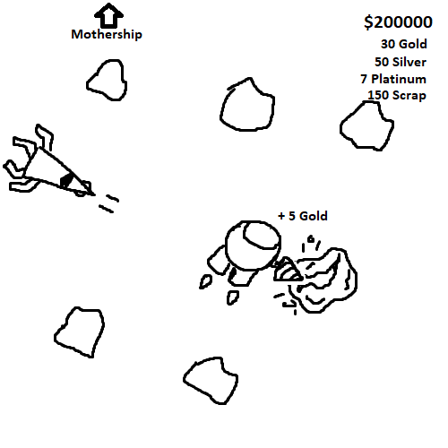
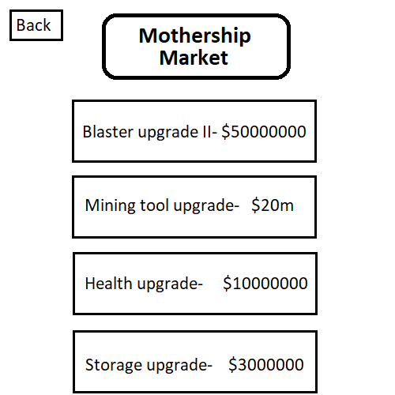

MineShip
I. High Concept
MineShip is a game in which you play as a small mining ship, sent out by your mothership to collect materials and resources in deep space. You must avoid space rocks, enemy ships and other threats while you mine away at valuable ore chunks and pieces of scrap with your mining tool and defend yourself with your laser. After safely bringing your gathered resources back to your mothership, you can sell them and use the money to purchase upgrades for your ship, to make the next trip even easier.
II. Genre
Simulation, shooter, exploration
III. Platform
The main priority is desktop, but if development goes well, mobile will be the a stretch goal.
IV. Story
There is no deeper story at this point, the current point of the game is just to progress and upgrade your ship. However, some filler text may be added to salvageable shipwrecks to establish some worldbuilding.
V. Aesthetics
I am aiming for a fairly simple pixel art graphical style, but I would like the asset art and animations to be smooth and aesthetically pleasing.
The sound will also be simple 8-bit sound to match the pixel art style, I likely will not include background music but could potentially add combat music for enemy encounters.
VI. Gameplay
The gameplay will be fairly simple but dynamic, and the experience will change based on how the player decides to play. Upgrades will be available to make certain aspects of gameplay easier, such as mining or movement speed increases or health boosts. As the player gets farther from the mothership, enemies and obstacles will spawn more frequently with better loot, so it will be easier the closer you are to the ship. This gives the player the ability to choose whether to play it safe, or risk the depths of space for a chance of getting rich quick. The player will also have to manually switch between their mining tool and their blaster, both of which will be controlled by the mouse.
VII. Screenshots


VIII. Other
I plan to use local storage to store the user's money and upgrades, although this is subject to change if a better option is possible.
IX. About the developer
My name is Josh D'Addio, and I am a second year game design and development major. I have developed skills in programming and game art in my time at RIT, and I have an understanding of Unity, Unreal engine, Maya, Procreate, visual studios, and more.